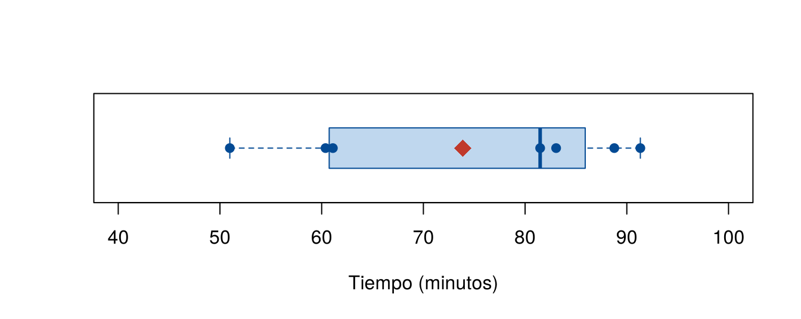
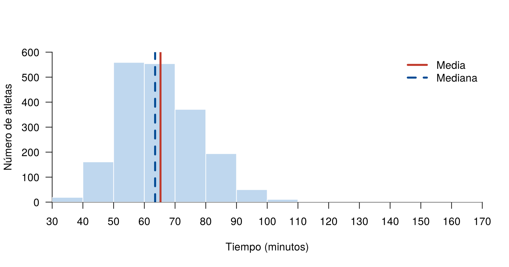

Una vez organizados los datos en tablas y gráficos, en ocasiones es necesario resumirlos con un solo número. Los indicadores de centro o de tendencia central describen un valor típico de una variable. Los principales son la media, la mediana y la moda.
Esta página usa la base CarreraLuz22, del paquete
paqueteMETODOS. Los bloques de código se ejecutan en orden,
porque algunos usan objetos creados en bloques anteriores.
library(paqueteMETODOS)
data("CarreraLuz22")
data("vivienda_faltantes")En los primeros ejemplos se usan los tiempos, en minutos, de las mujeres de la categoría juvenil:
juvenil <- subset(CarreraLuz22, categoria == "1. Juvenil" & sex == "Mujer")
tiempo_juvenil <- round(juvenil$timerun / 60, 2)
sort(tiempo_juvenil)
[1] 50.97 60.38 61.10 81.48 83.05 88.77 91.33La media aritmética, o promedio, es la suma de todos los valores dividida por el número total de datos:
\[ \bar{x} = \frac{1}{n} \sum_{i=1}^{n} x_i \]
donde \(n\) es el número de
observaciones y \(x_i\) es el valor de
la observación \(i\). En
R se calcula con mean():
sum(tiempo_juvenil) / length(tiempo_juvenil) # aplicando la fórmula
[1] 73.86857
mean(tiempo_juvenil) # con la función
[1] 73.86857Las mujeres de la categoría juvenil tienen un tiempo promedio de 73.87 minutos.
La suma de las desviaciones con respecto a la media es cero:
\[ \sum_{i=1}^{n} (x_i - \bar{x}) = 0 \]
La suma de los cuadrados de las desviaciones con respecto a un valor \(a\), \(\sum (x_i - a)^2\), es mínima cuando \(a = \bar{x}\).
Si \(x_i = k\) para todo \(i\), entonces \(\bar{x} = k\).
Si cada dato se multiplica por una constante, \(y_i = k x_i\), entonces \(\bar{y} = k \bar{x}\).
Si \(z_i = a x_i + b y_i\), con \(a\) y \(b\) constantes, entonces \(\bar{z} = a \bar{x} + b \bar{y}\).
La propiedad 4 permite cambiar de unidad sin recalcular todo. Por ejemplo, la media en segundos es 60 veces la media en minutos:
sum(tiempo_juvenil - mean(tiempo_juvenil)) # propiedad 1
[1] 0
mean(60 * tiempo_juvenil) # media en segundos
[1] 4432.114
60 * mean(tiempo_juvenil) # propiedad 4
[1] 4432.114La mediana es el valor que divide los datos ordenados en dos partes iguales. Si \(x_{(1)} \leq x_{(2)} \leq \dots \leq x_{(n)}\) son los datos ordenados:
\[ Me = \begin{cases} x_{\left(\frac{n+1}{2}\right)} & \text{si } n \text{ es impar} \\[2mm] \dfrac{x_{\left(\frac{n}{2}\right)} + x_{\left(\frac{n}{2}+1\right)}}{2} & \text{si } n \text{ es par} \end{cases} \]
En el ejemplo, \(n = 7\), así que la mediana está en la posición \(\frac{7+1}{2} = 4\):
sort(tiempo_juvenil)[4] # aplicando la fórmula
[1] 81.48
median(tiempo_juvenil) # con la función
[1] 81.48Por lo tanto, \(Me = 81.48\) minutos: la mitad de los tiempos es menor o igual a ese valor.
En un gráfico de cajas, la línea central de la caja es la mediana, y los extremos de la caja son el primer y el tercer cuartil:
boxplot(tiempo_juvenil, horizontal = TRUE, col = "#BFD7EE", border = "#034A94",
ylim = c(40, 100), xlab = "Tiempo (minutos)", las = 1)
stripchart(tiempo_juvenil, add = TRUE, pch = 19, col = "#034A94")
points(mean(tiempo_juvenil), 1, pch = 18, cex = 2, col = "#C0392B")
Tiempos de las mujeres de la categoría juvenil. El punto rojo indica la media.
La media usa todos los valores, por eso un dato extremo la afecta. La mediana depende del orden de los datos y se ve poco afectada. Por ejemplo, si se agrega al grupo el mayor tiempo de la carrera, la media aumenta mucho más que la mediana:
tiempo_con_extremo <- c(tiempo_juvenil, 166.03)
c(media_antes = mean(tiempo_juvenil), media_despues = mean(tiempo_con_extremo))
media_antes media_despues
73.86857 85.38875
c(mediana_antes = median(tiempo_juvenil), mediana_despues = median(tiempo_con_extremo))
mediana_antes mediana_despues
81.480 82.265 Si se observan todos los atletas, la media es mayor que la mediana, porque hay una cola de tiempos altos:
tiempo <- CarreraLuz22$timerun / 60
cortes <- seq(30, 170, by = 10)
hist(tiempo, breaks = cortes, col = "#BFD7EE", border = "white", las = 1,
xlim = range(cortes), ylim = c(0, 600), xaxp = c(30, 170, 14),
xaxs = "i", yaxs = "i", main = "",
xlab = "Tiempo (minutos)", ylab = "Número de atletas")
abline(v = mean(tiempo), col = "#C0392B", lwd = 3)
abline(v = median(tiempo), col = "#034A94", lwd = 3, lty = 2)
legend("topright", legend = c("Media", "Mediana"), col = c("#C0392B", "#034A94"),
lwd = 3, lty = c(1, 2), bty = "n")
Tiempos de todos los atletas con su media y su mediana.
c(media = mean(tiempo), mediana = median(tiempo))
media mediana
65.26274 63.50833 La moda es el valor o la categoría que más se repite. Se usa sobre todo en:
Si dos o más valores tienen la mayor frecuencia, hay más de una moda. Con dos se habla de una distribución bimodal, y con más, de una multimodal. En una variable continua casi no hay valores repetidos, por eso se usa la clase modal de la tabla de frecuencias.
R no tiene una función para la moda de unos datos,
porque mode() indica cómo se guarda un objeto. Se obtiene a
partir de una tabla de frecuencias, con which.max():
frecuencias <- table(CarreraLuz22$categoria)
frecuencias
1. Juvenil 2. Abierta 3. Veteranos A 4. Veteranos B 5. Veteranos C
19 1179 423 227 74
names(which.max(frecuencias))
[1] "2. Abierta"La moda es la categoría 2. Abierta, con 1,179
atletas.
La media truncada reduce el efecto de los datos extremos: elimina una proporción de los valores más pequeños y la misma proporción de los más grandes, y calcula la media con los demás. Si \(\alpha\) es la proporción que se recorta en cada extremo y \(g = \lfloor \alpha n \rfloor\) es la parte entera de \(\alpha n\):
\[ \bar{x}_{\alpha} = \frac{1}{n - 2g} \sum_{i=g+1}^{n-g} x_{(i)} \]
En R se usa el argumento trim
de mean(). Por ejemplo, con 12 datos y \(\alpha = 0.10\), \(g = \lfloor 1.2 \rfloor = 1\). Se elimina
un dato en cada extremo:
x <- c(41.67, 42.23, 45.53, 50.82, 52.93, 57.03,
61.13, 62.48, 72.77, 75.58, 76.98, 78.05)
mean(sort(x)[2:11]) # aplicando la fórmula
[1] 59.748
mean(x, trim = 0.10) # con la función
[1] 59.748El rango medio es el promedio entre el valor mínimo y el valor máximo:
\[ RM = \frac{\max(x) + \min(x)}{2} \]
Es fácil de calcular, pero solo usa dos datos. Por eso, un dato extremo lo afecta mucho. En la carrera, el tiempo máximo lo aleja de la media y de la mediana:
(min(tiempo) + max(tiempo)) / 2
[1] 99.58333| Tipo de variable | Moda | Mediana | Media |
|---|---|---|---|
| Cualitativa nominal | Sí | No | No |
| Cualitativa ordinal | Sí | Sí | No se recomienda |
| Cuantitativa con pocos datos extremos | Sí | Sí | Sí |
| Cuantitativa con datos extremos o cola larga | Sí | Sí | Conviene acompañarla de la mediana |
| Problema | Causa | Solución |
|---|---|---|
mean() o median() da
NA |
Hay datos faltantes | Usar na.rm = TRUE, y reportar cuántos
faltan |
mean() da NA con una
advertencia |
La variable no es numérica | Revisar con class() |
mode(x) devuelve
"numeric" |
mode() no calcula la moda estadística |
Usar table() y
which.max() |
| Se calcula la media de un código | Los números solo identifican categorías | Usar la moda |
| La media truncada recorta más de lo esperado | trim se aplica en cada extremo |
Con trim = 0.10 se recorta hasta 10 % por
cada lado |
| Se calcula la mediana de datos sin ordenar a mano | La posición se aplica a datos ordenados | Usar sort() antes de ubicar la
posición |
Calcule a mano la mediana de 12, 7, 20, 15, 9 y 30. Compruebe el
resultado con median().
Ordenados, los datos son 7, 9, 12, 15, 20 y 30. Como \(n = 6\), se promedian las posiciones 3 y 4: \((12 + 15) / 2 = 13.5\).
median(c(12, 7, 20, 15, 9, 30))
[1] 13.5Con tapply(), calcule la media y la mediana del tiempo
en minutos según sex en CarreraLuz22. ¿Quiénes
tuvieron menor tiempo promedio? ¿En qué grupo la media supera a la
mediana?
tapply(tiempo, CarreraLuz22$sex, mean)
Hombre Mujer
62.04079 70.36416
tapply(tiempo, CarreraLuz22$sex, median)
Hombre Mujer
60.09167 68.99167 Los hombres tuvieron menor tiempo promedio. En los dos grupos, la media supera a la mediana.
Use table() y which.max() para hallar la
moda del número de habitaciones en vivienda_faltantes.
names(which.max(table(vivienda_faltantes$habitac)))
[1] "3"La moda es 3 habitaciones.
Calcule la media, la media truncada al 10 % en cada extremo y la mediana de los tiempos de todos los atletas. ¿Qué observa?
c(media = mean(tiempo), truncada = mean(tiempo, trim = 0.10), mediana = median(tiempo))
media truncada mediana
65.26274 64.64266 63.50833 La media truncada queda entre la media y la mediana, porque deja por fuera los tiempos más extremos.
Un bono suma 2 puntos a cada nota de un grupo con media de 3.4. Después, todas las notas se multiplican por 1.1. ¿Cuál es la nueva media? Compruébelo con las notas 3, 3.2, 3.4, 3.6 y 3.8.
Por las propiedades de la media, la nueva media es \(1.1 \times (3.4 + 2) = 5.94\).
notas <- c(3, 3.2, 3.4, 3.6, 3.8)
mean(1.1 * (notas + 2))
[1] 5.94